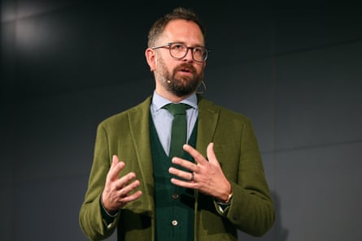

A leading Tour de France team manager, Jonathan Vaughters, has launched a scathing attack on cycling’s governing body on the eve of the race, accusing the UCI of being “unable to make good decisions when it comes to safety or the governance of the sport”.
Vaughters, who leads EF Education-Easypost and raced in four Tours as a professional, described cycling’s governing body as “managed by politicians and bureaucrats who do not understand the reality of the sport” and added that “they were put in place by the votes of other politicians who have never had their skin ripped off by the road”.
As the debate over safety in World Tour racing grows ever more heated, Vaughters told the Guardian: “The riders, coaches, doctors and mechanics in the sport have zero democratic vote in who runs the sport. The people who have real, hard-won knowledge are pushed to the outside.”
Vaughters’ comments come after three of the Tour’s biggest names – Tadej Pogacar, Jonas Vingegaard and Mathieu van der Poel – expressed their own safety concerns. Pogacar, the defending champion, said on Thursday: “It’s not a very safe sport, in my opinion.”
Van der Poel, the former road race world champion, criticised this year’s increase in riders from 176 to 184. “Making the bunch even bigger is a mistake,” he said. “Less teams, less riders, will make the biggest difference. Most of the time, it’s the behaviour of riders themselves, which is normal, because you all fight for the same position and there’s not enough space.”
Vingegaard, who had to adapt his pre-Tour programme after suffering a lingering concussion injury during Paris-Nice in March, also voiced his concerns earlier this summer over post-crash health protocols. “I went to the race doctor, but they never once checked me for concussion,” he has said. “My glasses were broken, I had blood on my face. For me, that was a bit odd that they didn’t check me for concussion.”
Jonathan Vaughters: ‘The riders, coaches, doctors and mechanics have zero democratic vote in who runs the sport.’Photograph: Tim de Waele/Corbis/Getty Images
Recent rule changes to gear ratios, targeting reduced speeds, and limits to handlebar width to ensure adequate bike handling, have also proven controversial.
Brent Copeland, a member of the SafeR commission advising the UCI on safety, said: “We agreed on a test to see if reducing gear sizing would make a difference. Some sprinters are running 58-11 gears and we have seen an increase in average speeds of between 8-10% in recent years.
“We are all trying to create a safer environment for cycling. We want parents to encourage kids to ride bikes, not be put off by crashes. On the other hand, the industry is trying to make bikes faster and more aerodynamic. But the narrower the handlebars, the less control you have.
“Are we looking at making it safer or just at criticising each other? There’s a lot of work to do, but it’s not going to change overnight.”